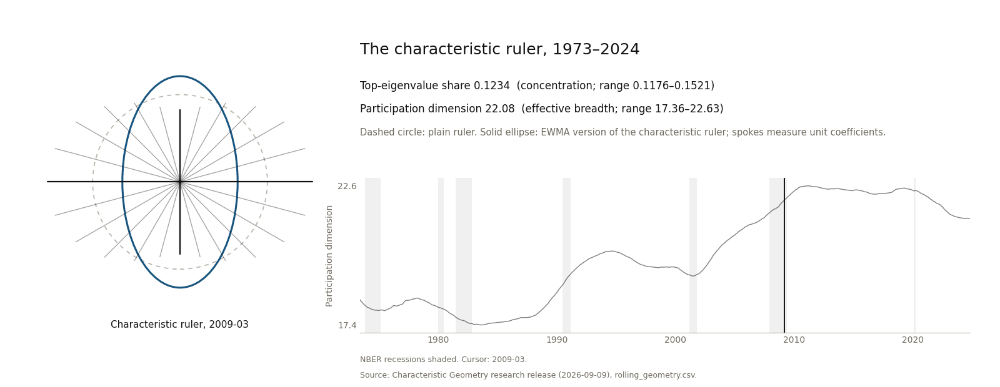

Mingyang Liu
Job market paper Characteristic Libraries and Portfolio Decisions

I work on empirical asset pricing and financial econometrics. My research asks which parts of a factor model’s answer (its factors, its alphas, its portfolios) reflect information in the data, and which reflect only how the model measures that information. I follow these measurement choices from identification and inference to the portfolios an investor ends up holding.
I received my PhD in Finance from Imperial College London in 2026, and I am a Visiting Researcher at the Imperial Centre of Excellence in Quantitative Finance. Before Imperial, I studied financial mathematics and economics at the University of Michigan and economics at Columbia University.

Figure 1 sketches the exponentially weighted (EWMA) version of the characteristic ruler from June 1973 to November 2024 through two numbers that summarise how 132 stock characteristics spread and overlap across stocks.1 The next section explains what a ruler is and why a model needs one.
Research agenda
Same information, different answer: before trusting what a factor model says, check its ruler.
A factor model explains many stocks’ returns with a few common drivers. Built on stock characteristics (size, value, momentum and many more), it gives three answers: which risks are priced, how much expected return its factors leave unexplained (the alpha), and what to hold. I ask how much of each answer comes from information in the data, and how much from choices that add no information. The central choice is the ruler. To credit a stock’s expected return to its drivers, a model must first decide when two combinations of characteristics are really different and how large each one is. The rule it uses for that is the ruler. I estimate the ruler from the data. I show that changing it changes how returns are split between the factors and the part no factor explains (the intercept; the alpha is a close relative, measured against a stated benchmark model), but not how well they are fitted, and I carry the ruler’s own estimation error into the confidence intervals. I then ask what a smaller alpha really reflects, and how the ruler, and even the way a library of characteristics is written down, changes what an investor holds. Researchers and portfolio managers change such conventions routinely, and a change of convention is easy to mistake for a discovery.
Give each characteristic a weight and add them up: every stock gets a score. Such a weighted combination is called a direction (it is not a portfolio). The plain ruler (the Euclidean or identity metric) judges a direction by its weights alone. The characteristic ruler (the Gram metric) judges it by the scores it gives real stocks: how large they typically are, and whether two directions’ scores line up across stocks, high on the same stocks and low on the same stocks.
The ruler is the convention a model uses to measure how large a direction is and how much two directions overlap. Two value signals that pick out the same cheap stocks count as overlapping under the characteristic ruler but as unrelated under the plain ruler.
Read in this order
Each paper holds everything else fixed, changes one choice, and asks what moves.
- Which ruler? → Geometric Framework (earlier, broader version)
- What does the ruler decide, and how reliable is the answer? → Characteristic-Space Metrics
- What does a smaller alpha mean? → Interpreting Pricing Errors
- Same forecast, different portfolio? → Characteristic Geometry
- Same information, different holdings? → Characteristic Libraries Job market paper
Short on time? Start with the job market paper.
Research
Characteristic Libraries and Portfolio Decisions
Same information, different holdings: copying or reweighting characteristics a library already has adds no information, yet it changes what a tuned investment rule holds, because the model’s penalty on large bets charges a copied theme less. Whether returns after trading costs rise or fall depends on the method, the cost level and how missing returns are valued.
A Geometric Framework for Identification in Characteristic-Based Factor Models
Same data, different factors: which combinations of characteristics count as distinct depends on the ruler. The paper takes the ruler from how characteristics spread and overlap across stocks, and builds identification, no-arbitrage restrictions and inference on it.
Earlier, broader version of Characteristic-Space Metrics.
Paper page · PDF · SSRN
Characteristic-Space Metrics in Factor Models: Identification and Inference
Same fitted returns, different split: the ruler decides how returns are credited to hidden factors, observed factors such as the market, and an intercept. When the ruler is estimated from the data, its error belongs in the confidence intervals.
Paper page · PDF · SSRN
Interpreting Estimated Pricing Errors: Evidence from Characteristic-Based Return Forecasts
Same ruler, different target: an alpha can shrink because the factors explain more, or because the expected-return estimate they must explain (the target) has changed. Pairing each model’s estimate with each model’s factors on the same stocks, the paper finds that the large alpha gap between two training rules mainly reflects different targets.
Characteristic Geometry and Portfolio Choice
Same forecast, different portfolio: a small fixed stability constant in the portfolio rule is written in the ruler’s units, so changing the ruler changes how strongly each stock position is held back. Remove only that constant and the weight gap nearly disappears.
Path

Ann Arbor · 2014–2017
University of Michigan
B.S. in Financial Mathematics and Economics
Photo: University of Michigan

New York · 2017–2019
Columbia University
M.A. in Economics (Financial Econometrics)

London · 2019–2026
Imperial College London
MRes in Finance (2020) and PhD in Finance (2026); Visiting Researcher from 2026
Photo: Imperial College London
Contact
| yang.liu19@imperial.ac.uk | |
| Imperial profile | profiles.imperial.ac.uk/yang.liu19 |
| linkedin.com/in/mingyang-buweinan | |
| ORCID | 0009-0008-5418-2563 |
Illustrative encoding of two monthly statistics of the 132×132 EWMA version of the characteristic ruler (Gram metric; 120-month window, 60-month half-life) from the Characteristic Geometry paper, not from the job market paper, which uses 153 characteristics. The ellipse’s axis ratio grows with the largest direction’s share of the spread (11.76% to 15.21% over the sample), and its area shrinks as the number of equally large directions rises (the participation dimension, 17.36 to 22.63); each statistic is rescaled between its sample minimum and maximum (slides, p. 23). Spokes show the measured length of one coefficient unit in 24 directions; under the plain ruler every spoke has length 1. Details are on the Characteristic Geometry page. Recession months: NBER.↩︎